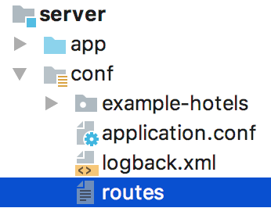
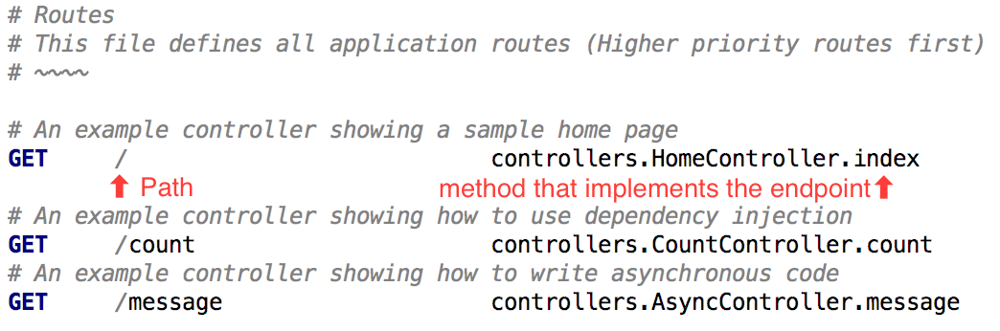

<!doctype html>
<html>
  <head>
    <meta charset="utf-8">
    <meta name="viewport" content="width=device-width, initial-scale=1.0, maximum-scale=1.0, user-scalable=no">

    <title>reveal.js</title>

    <link rel="stylesheet" href="css/reveal.css">
    <link rel="stylesheet" href="css/theme/sky.css">

    <!-- Theme used for syntax highlighting of code -->
    <link rel="stylesheet" href="lib/css/zenburn.css">

    <!-- Mermaid -->
    <link rel="stylesheet" href="https://cdn.rawgit.com/knsv/mermaid/6.0.0/dist/mermaid.css">
    <style>
      .mermaid .label  {
        color: white;
      }

      .node rect {
        fill: #005894;
      }
    </style>

    <!-- Printing and PDF exports -->
    <script>
      var link = document.createElement( 'link' );
      link.rel = 'stylesheet';
      link.type = 'text/css';
      link.href = window.location.search.match( /print-pdf/gi ) ? 'css/print/pdf.css' : 'css/print/paper.css';
      document.getElementsByTagName( 'head' )[0].appendChild( link );
    </script>
    <style>
      .reveal .footer {
        position: absolute;
        bottom: 1em;
        left: 1em;
        font-size: 0.7em;
      }

      /*Theme overrides*/
      .reveal h1, .reveal h2, .reveal h3, .reveal h4, .reveal h5, .reveal h6 {
        text-transform: none;
      }
    </style>
  </head>
  <body>
    <div class="reveal">
      <div class='footer'>
        <a href="https://grogs.github.io/scala-course">grogs.github.io/scala-course</a>
      </div>
      <div class="slides">
          <!-- TODO sbt new playframework/play-scala-seed.g8 -->
          <!-- Expalin project structure with screenshots: https://www.playframework.com/documentation/2.6.x/Anatomy  ??           -->
        <section data-markdown data-separator="^~~~~" data-separator-vertical="^~" data-notes="^Note:">
          <script type="text/template"> 
## Full Stack Scala  

### Lesson 2

~~~~

## Lesson Plan
Get familiar with Play and Scala.js, then make a change to the project we setup last week.

~~~~
### Play Framework
Note:
* Who's used Play? ...heard of it?

~
Play is a traditional MVC web framework for Scala and Java
Note: 
* Play 1.0 was a Java framework, first released in 2008/2009. I remember being really impressed with it. And then trying to use it with Scala which I was learning at the time - that was a little bit painful
* Play 2.0 was written in Scala, released in 2012. But it still very much targets both Java and Scala.
* Maintained by Lightbend as part of the "Lightbend Reactive Platform", alongside Akka and Legum

~
Play is a high velocity framework. 
Note:
* In the same vein as something like Ruby on Rails
* It tries to make it quick to get an app up and running
* And had everything you need to build an app out of the box. So you don't have to go and evaluate a bunch of JSON Libraries, or REST client to call external servies, instead it's all there out of the box.

~
This means it's opinionated

Note:
* It's a fairly monolothic framework - although you can pick-and-choose part sof it with minimal hassle.
* For our purposes it's great - easy to get up and running, and the live reload functionality we'll see later on is useful to have.
~

We will use it for the server sub-project:


Note:
* We have three sub-projects: 
  - client which has the Scala which compiles down to JavaScript
  - server which contains the serer-side Play code
  - shared which contains shared code like classes we'll re-use across the frontend and backend
* Here you can see the server project.
~
The `conf` folder holds the `routes` file.





Note:
* You'll be adding an endpoint later in the lesson, so listen up!
* This defines all your endpoints
* You can think of this as the entry-point to the application
* So you can see the index page (with /) is implemented by the `index` method on HomeController 

~

Our Scala code lives in the `app` folder.


Note:
* Let's drill down on that index page.
* All our code lives in the app folder in the server project.
* Inside there, see we a Controllers page, and inside there the HomeController which implements the index page.
~
Inside the HomeController we find the index method


Note:
* So we can see the implementation is an Action which return Ok (HTTP 200)
* The body of the page created from a template, and we pass a parameter to this template
~
The Controller is using the index view


<!-- .element height="50%" width="50%" -->

Note:
* So here's the template. It has a slgihtly weird syntax. You can read up on that during the exercise later on.
* This template gets compiled down to a Scala function which is then called from the HomeController.
* You can see it takes a message parameter, which corresponds to the value we passed in from the controller.
* This template actually calls through to the `main` template.
~
The underlying template


Note:
* So this is the HTML that gets generated when you open the index page
* And 'content' contains the string we passed through from the Controller
* We also have some boilerplate here to include our Scala.js code. But we'll ignore that for now. 
~
Play has a really quick feedback loop. "Just-hit-refresh"  

Note:
* This is what got me interested in it back in 2010. I was just really impressed by this. It kind of felt like working with RoR or Django.
* Let's demo that quickly...
* *Demo* Change index page to say "Welcome to Lesson 2!"
** and this allows the feedback loop to be on par with ruby on rails or django
* The cost of this is that you're locked into SBT or Gradle. 
** Play needs to hook into your build tool to do this. 
** So using Play with Play would work, but you lose live reload and there's a few other ways in which it's just... less documented
~
It has everything you need to build web backends out-of-the-box  
- Templating
- JSON library
- Dependency Injection
- REST client
- WebSockets/Server-Sent Events

Note: 
* You can switch out components if you like, but it's nice that's there's a nice default.
* There's been a
**Demo**
* Templates - type safety. 
** Change `content: Html` in `main.scala.html` to a `java.util.Date`.
** Refresh. Compilation error. 
*** Sidenote - Compilation errors in the browser are nice, but not something you want in prod - so these only happen during development
~
Play is aimed at tradional web apps with server-side templating.

Note:
* And for better or worse, I think the web is headed towards richer more complicated frontends - and Play isn't really build to target that
~
But, Play's still great for building RESTful APIs.

Note:
* Some people will say it's overkill, but really you would still use everything except the templating.
* I've used it on a number of projects just to provide an API
* It's still been very valuable just for this fast reloading and ease of deployment
~
Deployment is really simple

Note:
* Heroku has built in support for it
* I used to demo how easy it is to create a docker image, but it can take a minute so I'm going to skip over that unless anyone's interested. `sbt docker:publishLocal`
* there's a bunch of other ways of deploying which you can read up on.
~
Big community and good documentation

Note:
* And this leads into another strength.
* Play is mature and has a big community. Really good documentation and lots of stuff on stackoverflow
* And that's kind of essential when you're getting started.

~~~~
## Scala.js

Note:
OK, enough with Play. Let's talk about Scala.js
~
So what is Scala.js?
~
A Scala to JavaScript compiler

Note:

Started by Sebastien Doeraene at EPFL a little over years ago now

Hooks into the Scala compiler, and instead of emitting JVM bytecode, it emits JavaScript


~
You can use it to write your JavaScript web frontend.  

But there are other usecases.  

Note:
* Web frontend is where most of the community's effort is going, but there's nothing that technically limits it
* People have used it with NodeJS on the server.
* I've used that a little myself: Electron with Scala.js, which leverages NodeJS
~
Why use Scala.js?  

Note:
* For us, it's this ability to use one language across both the frontend and backend
* For me, intially it was just "I like Scala, so Scala.js sounds cool"
* The productivity argument: not only do we share the language, but we share code - domain model and logic. We'll see this later on in the course.
~
Share domain model and business logic across client and server.  

e.g. Validation logic  

You can refactor some code on the server and the template will be updated!  <!-- .element: class="fragment" -->

Note:
* You can refactor code (e.g. rename a field on a class in your domain model) and the frontend is just update, without a coordination overhead.
* E.g. Validation logic - you want to do validation on the client-side to provide an rich interactive experience...
** But you need to run it on the server-side to make sure it can't be bypassed.
** It seems a shame to write that twice. Overhead, and there can be differences, which makes it for a poor user experience.
~
Make the client more typesafe  

Catch more errors at compile time

Note: 
Much moreso than JavaScript.  
Even linters aren't going to get you that much typesafety. I'm sure they're getting better and better, but that can't compete with a language with a much richer type system.
~
The type safety goes further than Typescript.

In TypeScript, you can optionally add types.  
In Scala.js, you can optionally go Dynamic.<!-- .element: class="fragment" -->

Note:
* Fundamentally, in typescript you can optional add types and gradually make parts of your codebase more typesafe.
* But with Scala.js, by default everything is typed and you can optionally go dynamic
** allowing you to call potentially non-existing fields or methods on an object.
** Which can be very useful for using an existing JavaScript library, but is something you really want to avoid.
~
Even your templates are typesafe  

Much like Play's server side templating  

[Rapture HTML Demo](https://embed.scalafiddle.io/embed?sfid=hMgI9Bu/1) <!-- .element: class="fragment" -->

Note:
* People are already used to generating HTML from code, via React. 
  * This is popular in Scala.js
* Jon Pretty's Rapture HTML takes this to the extreme. 
  * HTML element nesting constaints at compile time
  * and even 'style' attribute's CSS validated at compile time. 
  * [Example](https://embed.scalafiddle.io/embed?sfid=hMgI9Bu/1)
  * See 'Principles of Elegance' talk from ScalaDays NY 2016

~ 
It's mature with a rich ecosystem

Note:
* No longer experimental (since Feb 2015).
~
Lots of existing scala libraries work with Scala.js:
- Scalaz
- Cats
- Shapeless
- Monix
- Circe
- Most of the standard library, e.g. Futures

~
Typesafe fascades for existing libraries (varying quality):
- DOM
- jQuery
- React
- Angular
- Vue.js
- D3

Note:
* DOM API comes bundled with Scala.js
* jQuery fascade is mature and maintained by Scala.js team
* React actually has multiple fascades. I use one of them on personal projects.
~
Built for Scala.js:
- ScalaTags
- ScalaCss
- Diode
- autowire
- Udash
- scalajs-bundler


Note:
* The community is active and all sorts of Scala.js specific libraries have been written.
* We'll be using autowire later in the course
~
Scala.js looks similar to JavaScript/ES6, but with types.

[Demo](https://embed.scalafiddle.io/embed?sfid=8D8UXdW/6)
~~~~
## Exercise

Fix the tests in Lesson2.scala

```bash
cd scala-course #go to your checked out project
git pull #fetch latest code
./sbt test #run the tests
```

Note:
* Make sure you run `git pull`, but you can run the tests from IntelliJ
* You'll need to implement a new endpoint: /time
* When the tests fail you'll get hints, or just ask me or Adam
* And there's a link at the bottom of the slides if you want to review the earlier section where we went through the project structure
          </script>         
        </section>
      </div>
    </div>

    <script src="lib/js/head.min.js"></script>
    <script src="js/reveal.js"></script>

    <script>
      // More info https://github.com/hakimel/reveal.js#configuration
      Reveal.initialize({
        history: true,

        // More info https://github.com/hakimel/reveal.js#dependencies
        dependencies: [
          { src: 'plugin/markdown/marked.js' },
          { src: 'plugin/markdown/markdown.js' },
          { src: 'plugin/notes/notes.js', async: true },
          { src: 'plugin/highlight/highlight.js', async: true, callback: function() { hljs.initHighlightingOnLoad(); } }
        ]
      });
    </script>

    <!-- Mermaid -->
    <script src="https://cdn.rawgit.com/knsv/mermaid/6.0.0/dist/mermaid.min.js"></script>
    <script>mermaid.initialize({startOnLoad:true});</script>
  </body>
</html>
